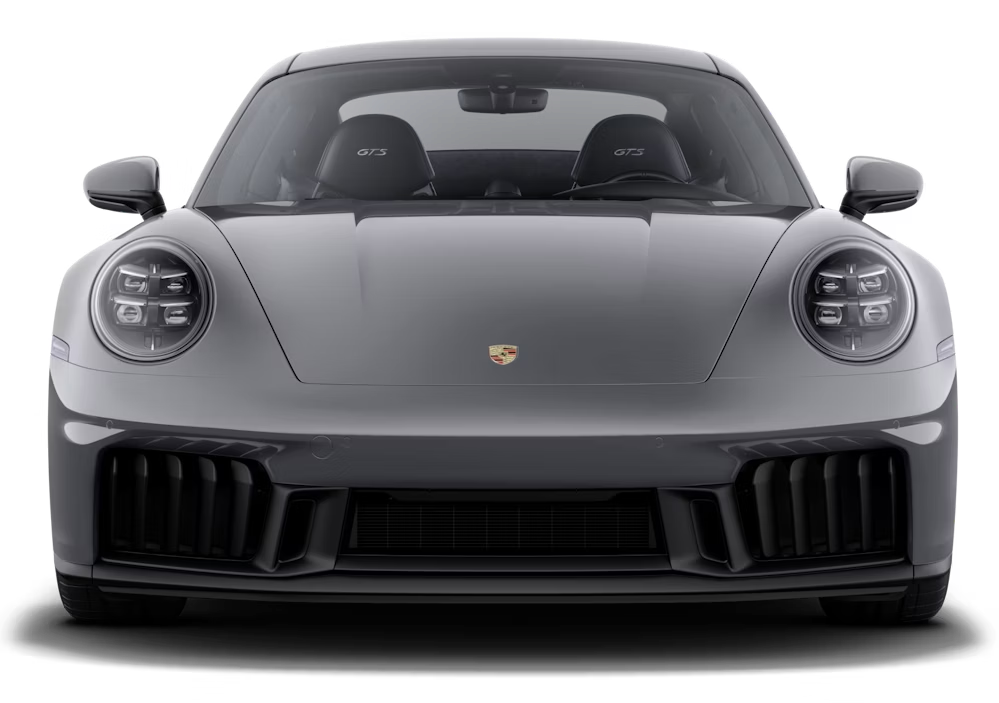
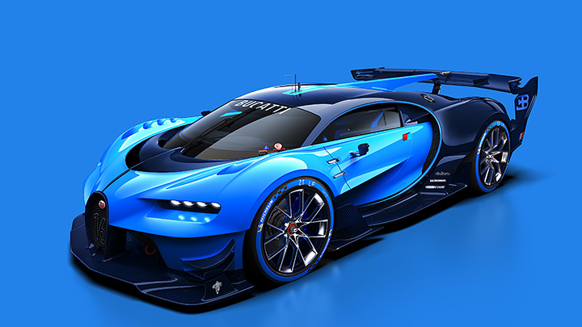

Bayerische Motoren Werke Aktiengesellschaft (BMW AG),[4] trading as BMW Group (commonly abbreviated to BMW (German pronunciation: [ˌbeːʔɛmˈveː] ⓘ), sometimes anglicised as Bavarian Motor Works), is a German multinational conglomerate manufacturer of luxury vehicles and motorcycles headquartered in Munich, Bavaria, Germany. In 1922, the name and assets of Bayerische Motoren Werke GmbH (formerly Rapp Motorenwerke) were transferred to Bayerische Flugzeugwerke AG (formerly Otto Flugmaschinenfabrik), thereby giving rise to the company known today as BMW AG.[5][6]The company's automobiles are marketed under the BMW, Mini and Rolls-Royce brands, and motorcycles are marketed under the BMW Motorrad brand. In 2023, BMW was the world's ninth-largest producer of motor vehicles, and the 6th largest by revenue,[7] with 2,555,341 vehicles produced in that year alone.[8] In 2023, the company was ranked 46th in the Forbes Global 2000.[9] The company has significant motor-sport history, especially in touring cars, sports cars, and the Isle of Man TT.BMW is headquartered in Munich and produces motor vehicles in Germany, the United Kingdom, the United States, Brazil, Mexico, South Africa, India, China, and previously also in the Netherlands (ceased in 2023).[10] The Quandt family [de] is a long-term shareholder of the company, following investments by the brothers Herbert and Harald Quandt in 1959, saved BMW from bankruptcy, with remaining shares owned by the public.HistoryMain article: History of BMWThe Otto Flugmaschinenfabrik was founded in 1910 by Gustav Otto in the Kingdom of Bavaria, which was a state of the German Empire. The firm was reorganized on 7 March 1916 into Bayerische Flugzeugwerke AG. This company was then renamed to Bayerische Motoren Werke (BMW) in 1922. However, the name BMW dates back to 1913, when a company using that name was founded by Karl Rapp initially as Rapp Motorenwerke. The name and Rapp Motorenwerke's engine-production assets were transferred to Bayerische Flugzeugwerke in 1922, who adopted the name the same year.[11] BMW's first product was an engine for fighter aircraft of the Luftstreitkräfte. It was a straight-six called the BMW IIIa, designed in the spring of 1917 by engineer Max Friz. Following the end of World War I, BMW remained in business by producing motorcycle engines, agricultural equipment, household items, and railway brakes. The company produced its first motorcycle, the BMW R 32, in 1923.BMW became an automobile manufacturer in 1928 when it purchased Fahrzeugfabrik Eisenach, which, at the time, built the Austin 7 under licence from Automobilwerk Eisenach, badged as the Dixi.[12] The first car sold as a BMW was a rebadged Dixi called the BMW 3/15, following BMW's acquisition of the car manufacturer Automobilwerk Eisenach. Throughout the 1930s, BMW expanded its range into sports cars and larger luxury cars.[13][14]Aircraft engines, motorcycles, and automobiles would be BMW's main products until World War II. During the war, BMW concentrated on building the BMW 801 aircraft engine using as many as 40,000 slave laborers.[15] These consisted primarily of prisoners from Nazi concentration camps, most prominently Dachau. Motorcycles remained as a side-line and automobile manufacture ceased altogether.BMW's factories were heavily bombed during the war and its remaining West German facilities were banned from producing motor vehicles or aircraft after the war. The company survived by making pots, pans, and bicycles. In 1948, BMW restarted motorcycle production. BMW resumed car production in Bavaria in 1952 with the BMW 501 luxury saloon. The range of cars was expanded in 1955, through the production of the cheaper Isetta microcar under licence. Slow sales of luxury cars and small profit margins from microcars, meant BMW was in serious financial trouble and in 1959 the company was nearly taken over by rival Daimler-Benz.[16][17]A large investment in BMW by Herbert Quandt and Harald Quandt resulted in the company surviving as a separate entity. Günther Quandt was a well-known German industrialist and joined the Nazi party in 1933; he made a fortune arming the German Wehrmacht, manufacturing weapons and batteries.[18] Many of his enterprises were appropriated from Jewish owners under duress with minimal compensation. At least three of his enterprises made extensive use of slave laborers, as many as 50,000 in all.[19] One of his battery factories had its own on-site concentration camp, complete with gallows. Life expectancy for laborers was six months.[19][20] While Quandt and BMW were not directly connected during the war, funds amassed in the Nazi era by his father allowed Herbert Quandt to buy BMW.[15]
PORSCHE

Dr. Ing. h.c. F. Porsche AG, usually shortened to Porsche (German pronunciation: [ˈpɔʁʃə] ⓘ; see below), is a German automobile manufacturer specializing in luxury, high-performance sports cars, SUVs and sedans, headquartered in Stuttgart, Baden-Württemberg, Germany. The company is owned by Volkswagen AG, a controlling stake of which is owned by Porsche Automobil Holding SE, usually shortened to Porsche SE. Porsche's current lineup includes the 911, Panamera, Macan, Cayenne and Taycan.The origins of the company date to the 1930s when German Bohemian automotive engineer Ferdinand Porsche founded Porsche[5] with Adolf Rosenberger, a keystone figure in the creation of German automotive manufacturer and Audi precursor Auto Union,[6] and Austrian businessman Anton Piëch, who was, at the time, also Ferdinand Porsche's son in law. In its early days, it was contracted by the German government to create a vehicle for the masses, which later became the Volkswagen Beetle.[7] After World War II, when Ferdinand, a member of both the Nazi Party and the SS, would be arrested for war crimes, his son Ferry Porsche, an SS volunteer, began building his own car, which would result in the Porsche 356.In 2009, Porsche entered an agreement with Volkswagen to create an 'integrated working group' by merging the two companies' car manufacturing operations.[8][9] By 2015, Porsche SE, the holding company spun off from the original Porsche firm, had a controlling interest in the Volkswagen Group, which included Audi and Lamborghini as subsidiaries.[10]
BUGGATTI

Automobiles Ettore Bugatti was a German then French manufacturer of high-performance automobiles. The company was founded in 1909 in the then-German city of Molsheim, Alsace, by the Italian-born industrial designer Ettore Bugatti. The cars were known for their design beauty and numerous race victories. Famous Bugatti automobiles include the Type 35 Grand Prix cars, the Type 41 "Royale", the Type 57 "Atlantic" and the Type 55 sports car.The death of Ettore Bugatti in 1947 proved to be a severe blow to the marque, and the death of his son Jean in 1939 meant that there was no successor to lead the factory. With no more than about 8,000 cars made, the company struggled financially, and it released one last model in the 1950s before eventually being purchased for its airplane parts business in 1963.In 1987, an Italian entrepreneur bought the brand name and revived it as Bugatti Automobili S.p.A.[2]A film about the founding of Bugatti is being produced by Andrea Iervolino.[3]The founder Ettore Bugatti was born in Milan, Italy, and the automobile company that bears his name was founded in 1909 in Molsheim located in the Alsace region which was part of the German Empire from 1871 to 1919. The company was known both for the level of detail of its engineering in its automobiles, and for the artistic manner in which the designs were executed, given the artistic nature of Ettore's family (his father, Carlo Bugatti (1856–1940), was an important Art Nouveau furniture and jewelry designer).